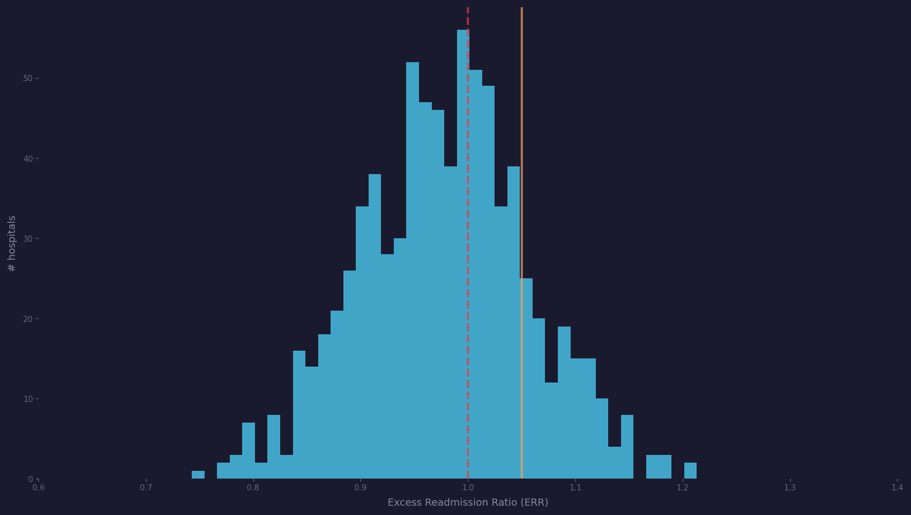
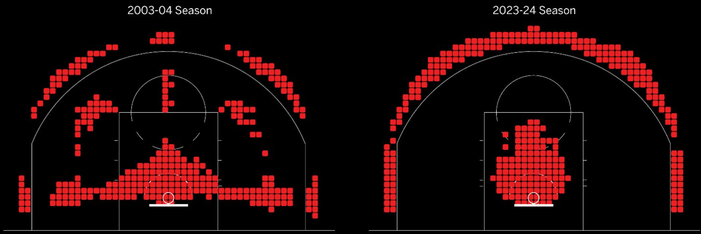
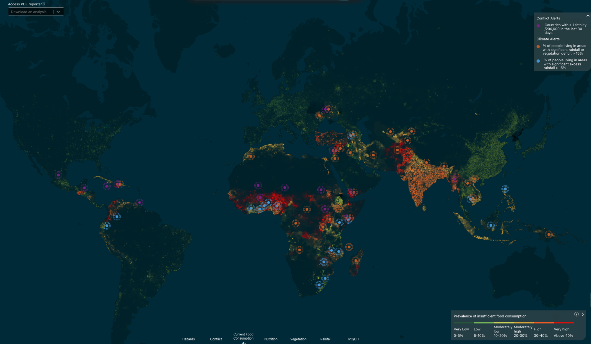
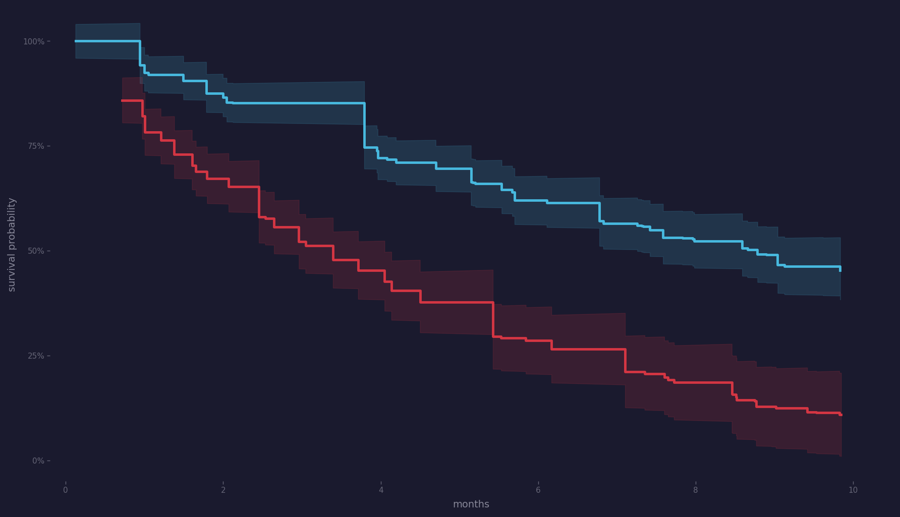
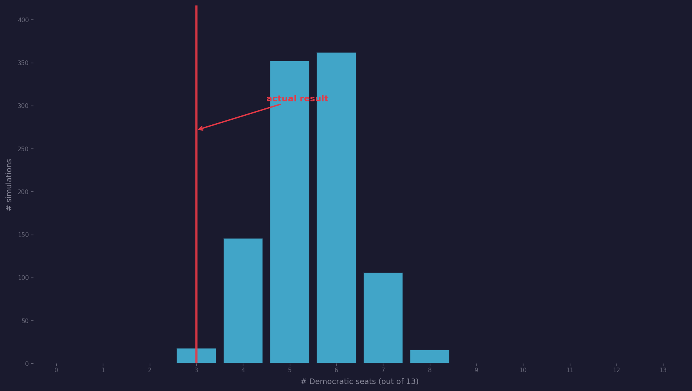
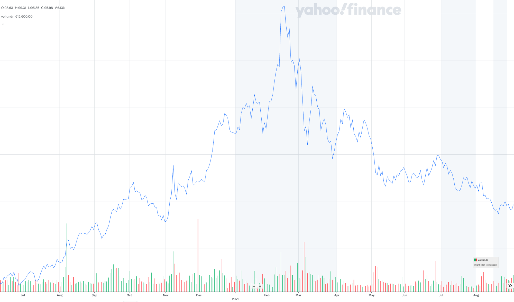
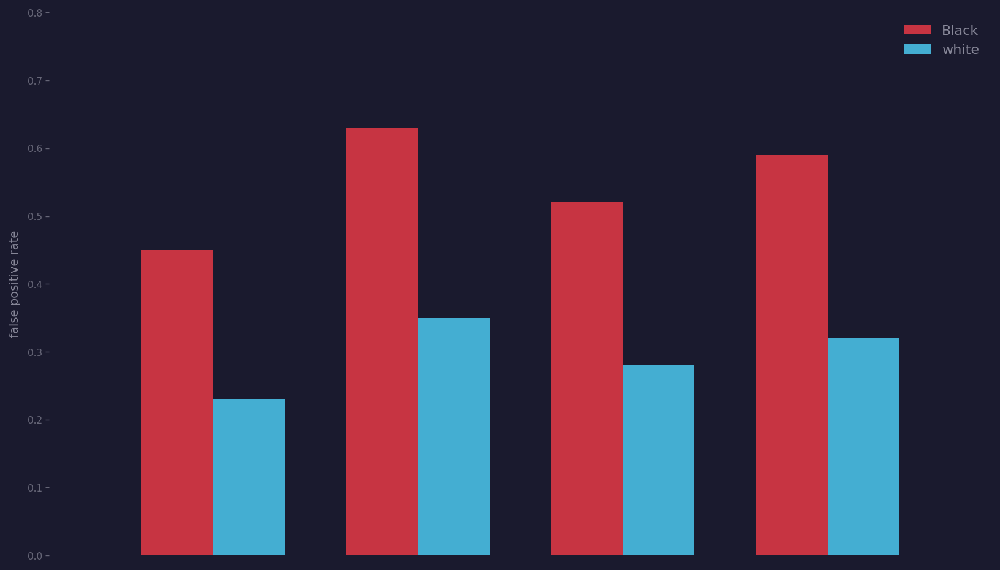
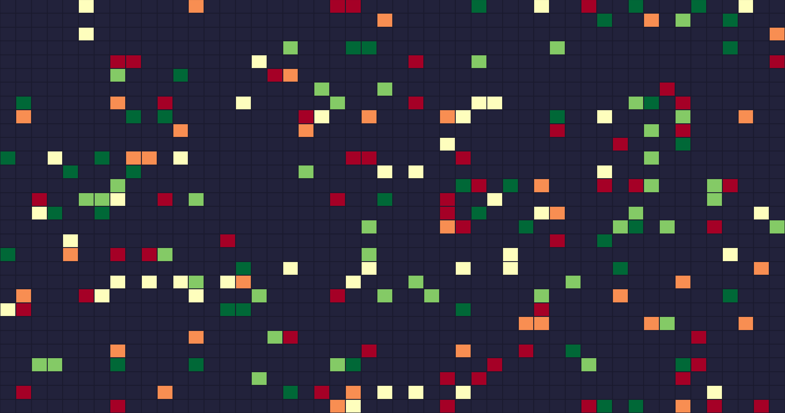

Lecture 1: Introduction
Applied Statistics: From Data to Decisions
Monday, March 30, 2026
2,217 hospitals penalized for excess readmissions. which ones actually have a quality problem — and which just serve sicker patients?
source: CMS Hospital Readmissions Reduction Program
NBA shot locations, 2003 vs 2024. why did players eliminate the mid-range jumper?
source: Kirk Goldsberry / NBA shot chart data
Wealthfront manages $50B. which clients should harvest losses today to save on taxes?
source: Wealthfront blog, “10 Years of Tax-Loss Harvesting”
World Food Programme, 2018. how to reallocate food baskets in Yemen to feed 2M more people at the same cost?
source: WFP HungerMap LIVE / Zero Hunger Lab
NextEra is siting 4.5 GW of new solar across four states. which parcels maximize energy per dollar?
source: NREL Solar Resource Data (public domain)
Pfizer, November 2020. do 8 vs 162 cases in 43,000 patients prove 95% efficacy — enough for emergency authorization?
source: Polack et al., NEJM 2020
North Carolina, 2016. was a 10–3 Republican sweep from 53% of votes gerrymandering — or geographic luck?
source: Mattingly et al., Duke University
Zillow’s algorithm bought 9,790 homes in Q3 2021. why did it overpay on nearly all of them?
source: Yahoo Finance
Broward County uses COMPAS scores to set bail. why is the false positive rate 45% for Black defendants vs 23% for white?
source: ProPublica Machine Bias analysis
80% of Netflix viewing comes from recommendations. can a $1M algorithm improve predictions enough to save $1B/yr in churn?
source: Netflix Prize / matrix factorization
data, model, decision
who am I?
academic
- math and physics at Yale
- PhD in computational math, Stanford
- postdoc at Caltech
- professor of OR at Cornell
- professor of MS&E at Stanford
applied
- finance: Goldman, Two Sigma, Tau Balance
- tech: Google
- energy: Aurora Solar
- health: Apixio, epidemiology research
- politics: Obama 2012
- logistics: World Food Program
every one required: data, model, decision
who are you?
poll: PollEv.com/madeleineudell824
- what’s your major?
- what year are you?
- dream industry?

what kinds of consequential decisions do you expect to make in your career? what data will you have? what uncertainties will you face?
AI can build the analysis
can you trust it?
- building analyses is getting easier every year
- evaluating whether it’s trustworthy — that’s getting harder
- MS&E graduates are in an extremely strong position here
the deal
- we use AI to arrive at the best decisions we can
- then we defend these conclusions, real-time, in-person
- your writing should represent your authentic opinion and voice
- we’re even. we’re going into this future together.
an AI hands you an analysis that says Hospital X should be fined. what questions do you ask before signing off?
let’s dig into this one
Demo: hospital readmissions
Excess Readmission Ratio
ERR = predicted readmissions / expected readmissions
above 1.0 → more readmissions than expected → penalty
your hospital’s ERR is 1.05. why might your readmissions be so high? what questions would you ask, or what data would you gather, to understand why — and to figure out what you might do to lower them?
missing data: who disappears?
back to the notebook — .isna().sum()
- “Too Few to Report” → data suppressed for small samples
- small/rural hospitals disproportionately affected
which patients are most likely to be in the “too few” category? what does that mean for fairness?
four ways to reason with data
same dataset, four different questions:
| question | decision | |
|---|---|---|
| summary | what does the ERR distribution look like? | which hospitals are outliers? |
| prediction | given a hospital’s traits, what ERR to expect? | should CMS flag this hospital? |
| inference | is an ERR of 1.05 real or noise? | should the hospital be fined? |
| causation | do fines actually reduce readmissions? | should CMS continue the program? |
Three acts of applied statistics
I
build models
explore, clean, predict
regression, trees, features
Lec 1–7
II
trust models
sample, test, infer
bootstrap, hypothesis tests
Lec 8–12
III
see further
classify, cluster, cause
PCA, causal inference
Lec 13–19
the montage → the course
| question | topic | act |
|---|---|---|
| hospital readmission penalties | EDA, hypothesis testing | I → II |
| NBA shot selection | EDA, conditional expected value | I |
| Wealthfront tax-loss harvesting | optimization, regression | I |
| WFP food allocation | linear algebra, optimization | I |
| NextEra solar farm siting | feature engineering, regression | I |
| Pfizer vaccine efficacy | hypothesis testing, multiple testing | II |
| NC gerrymandering | permutation tests | II |
| Zillow’s iBuying algorithm | regression, backtesting | II |
| COMPAS bail scores | classification, fairness | III |
| Netflix recommendations | PCA, SVD | III |
logistics
- website: stanford-mse-125.github.io/web
- Ed Discussion: Q&A and announcements
- grading: HW 10%, review sessions 15%, quizzes 25%, project 30%, final 20%
- AI policy: use it. then defend your conclusions in person.
how to use AI in this course
- collaborate with AI on homework and projects
- learn with AI — review your practice quiz answers, explain a concept, clarify lecture material
- upload course materials to give AI context about what we cover
- you take responsibility for the work you submit — even if AI typed it
quizzes and exam
- you may skip either quizzes or the final exam, but not both
- take both? your grade = max of standardized scores
- quizzes: 8 Wednesdays, closed book, 10 minutes
- final exam: Fri Jun 5, 3:30–5:00 PM
device policy
- laptops: back row only
- iPads and phones: note-taking only
data, model, decisions
many fields study the how to make consequential decisions with data:
- operations research
- management science
- AI
- machine learning
- applied statistics
- data science . . .
each has its own methods, tools, and culture. they overlap significantly!
what makes a decision consequential?
- financial — $881M loss (Zillow), $50B managed (Wealthfront)
- human — who gets bail, who gets the vaccine
- irreversible — can’t un-sentence, can’t un-approve, can’t un-elect
- scale — 2M people fed, 200M recommendations served
every example in the montage is a consequential decision
by the end of the quarter









you’ll have the tools to answer all of these
before next class
- read Chapter 1 in the course notes
- install Python (Anaconda or Colab)
- sign up for Ed Discussion
- browse the course website
one-minute feedback
- what was the most useful thing you learned today?
- what was the most confusing?